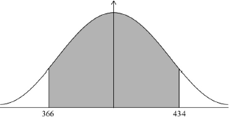

* This question is from an exam for a previous syllabus, and may contain minor differences in marking or structure.
(A1) (C1)
[1 mark]
OR (M1)
Note: Award (M1) for a sketch of approximate normal curve with a vertical line drawn to the right of the mean with the area to the right of this line shaded.
(A1) (C2)
[2 marks]
(A1)(ft)(M1)
Note: Award (A1)(ft) for seen, award (M1) for multiplying their 33.7244… by 2. Follow through from their answer to part (b).
OR
(A1)(ft)(M1)
Note: Award (A1)(ft) for their seen, (M1) for difference between their answer to (b) and their 366.
OR
 (A1)(ft)(M1)
Note: Award (A1)(ft) for their seen. Award (M1) for correct symmetrical region indicated on labelled normal curve.
67.4 (g) (A1)(ft) (C3)
Note: Accept an answer of 68 from use of rounded values. Follow through from part (b).
[3 marks]